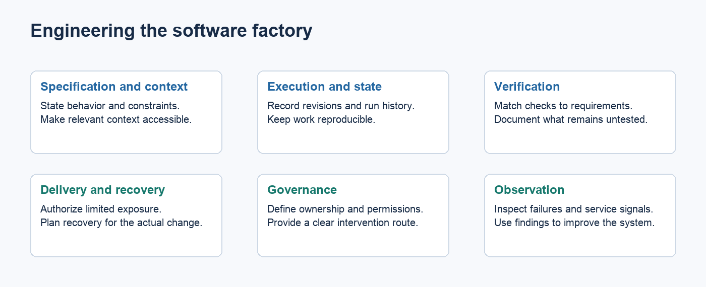
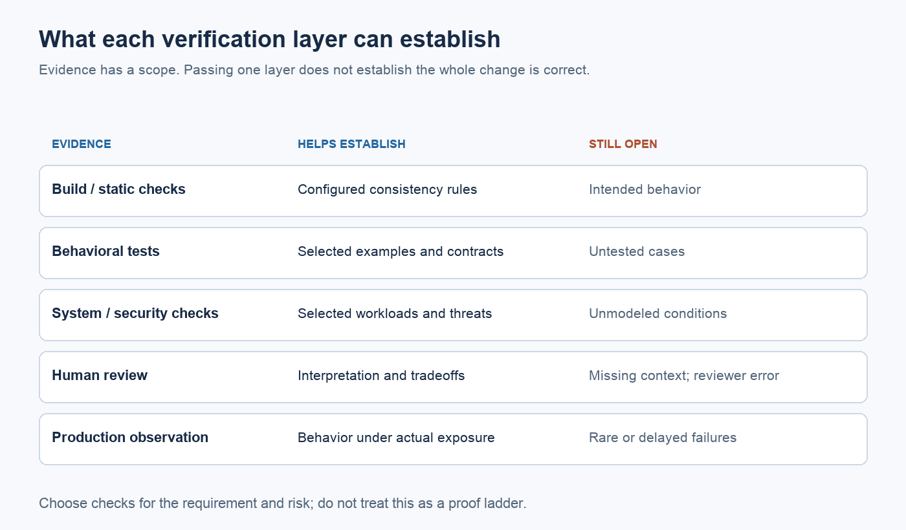
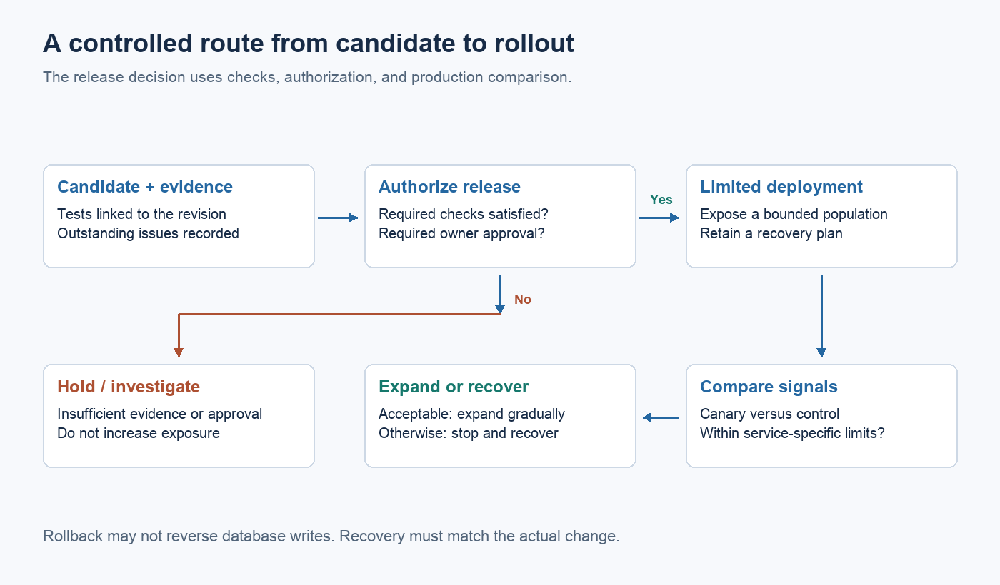

Engineering the software factory
Building my own software factory has moved more of my attention to the system around the code. I am defining how intent becomes an implementation, which evidence makes that implementation acceptable, and how the process should change after a failure.
Delegating a function requires understanding its behavior. Delegating a workflow that produces many changes adds responsibility for inputs and permissions, failure handling, and acceptance decisions. I still need to understand the implementation, including the conditions under which the factory produces and trusts it.
The control plane, reusable agent packages, and evaluation tooling in my project inform this working model. I expect it to change as the project exposes mistakes and the industry learns more. Treat the recommendations as design judgments to test.

Key points
- Software factory engineering moves more of our work toward specifications, interfaces, verification, and the behavior of the production system itself.
- Start with a repeated delivery problem and define the system's responsibilities before choosing an agent framework.
- Specifications should state intended behavior and the evidence required to accept a change.
- Context needs ownership and freshness; larger prompts aren't a substitute for reliable information.
- Use ordinary software for workflow rules and models for tasks requiring interpretation.
- Verification, controlled delivery, and human intervention need to be designed together.
- Measure the cost of accepted changes and failures across the process.
What building it has changed
The surrounding work is now concrete: completion contracts determine what a run can hand off, and execution state records what happened. Reviewers need evidence they can assess before generated work moves forward.
One October 29 evaluation illustrates the value of design review. The architecture reviewer caught ambiguity about an absent HTTP header and the loss of strict JSON validation in the proposed plan. The author revised the design, and the reviewer checked the corrections using stable finding identifiers. The useful output was a corrected contract before implementation depended on it. The workflow completed, but product checks were reviewer-reported; the operator did not independently test the product. Project run assessment, October 29 (local source; not public).
A later run exposed a different boundary. The architect produced its documents but repeatedly failed to submit an accepted completion result: one side sent artifact strings while the controller expected objects. The controller then mislabeled the validation error as temporary unavailability and advised a retry. The workflow was eventually cancelled. Documents existed, but the production system could not accept the handoff. That failure directs attention to schema compatibility, error classification, and recovery behavior. It is an observation about that run, not a claim that the same defect remains in today's implementation. Project run assessment, October 31 (local source; not public).
The October 29 run also recorded reviewers attempting to read documents before publication. Starting agents concurrently had introduced a coordination obligation: consumers needed to know when usable inputs existed. Concurrency has to earn its place through the dependencies it can actually respect. Project run assessment, remaining issues (local source; not public).
Cost accounting needs the same care. That run reported about 2.74 million tokens, most of them cached input. Its dollar cost was unknown. The reported token total fell relative to the preceding run, but runtime, skills, and instructions had changed; a single comparison cannot identify the cause or establish an efficiency gain. I need repeatable evaluation and trustworthy accounting before claiming that the factory saves money. Project run assessment, usage (local source; not public).
Model selection is one decision in a process that runs from request to maintained production change. I also have to decide how the factory handles conflicting requirements, responds to failed checks, and stops a release.
Start with one repeated class of work and define a boundary the team can support. Engineer its failure path before broadening the framework. A narrow workflow is easier to investigate when its behavior and ownership are clear.
Define what enters and what leaves
Suppose the first workflow handles routine dependency updates in one service. Its input includes the proposed version and update policy. Its output includes a patch, test results, and a record of the dependency changes. Acceptance requires a named set of checks; release follows the team's existing authorization process.
Route updates requiring application redesign out of this workflow. The agent can identify the unsupported case, explain it, and stop for a decision.
Assign an owner to the workflow itself. Someone has to maintain the environment and respond when the update process stops working. Otherwise a supposedly shared capability becomes a queue nobody owns.
Specify behavior before generating code
A task needs enough detail to tell an executor what to change and a reviewer how to judge the result. Include constraints that could invalidate an otherwise plausible implementation.
For an API change, that might mean preserving response behavior for existing clients and meeting a latency budget. Translate stable requirements into contract tests where possible. Keep the reasons behind those tests available, because a passing suite cannot cover an intent nobody expressed.
Separate a proposed plan from accepted requirements. An agent may discover a better implementation approach. It should not silently redefine the customer requirement to suit that approach.
Security belongs in the same design. NIST's final SSDF version 1.1 describes practices that can be integrated into different development lifecycles. It is guidance for secure development, not a certification of an agent workflow. NIST SP 800-218
Treat context as maintained infrastructure
A context system should help an executor find authoritative information about the part of the system it is changing. Architecture decisions need dates and owners. Generated summaries should retain links to the source and indicate when they were refreshed.
Conflicts deserve explicit handling. A current contract and an old design document may disagree. The agent needs a rule for identifying the authority or a way to ask the owner. Returning both documents without explanation exports the problem into every execution.
Liu and colleagues found positional sensitivity in long-context retrieval tasks: models did not use information uniformly across the input. The study describes older models, so it cannot quantify current coding-agent behavior. Use it as a reason to evaluate evidence retrieval and use on your tasks. Lost in the Middle
Repository instructions need the same discipline. Gloaguen and colleagues' 2026 evaluation found that context files did not generally improve task success in their tested settings, while increasing inference cost. Test useful guidance against real tasks and remove material that adds cost without helping. Evaluating AGENTS.md
Coordinate execution with ordinary software
Decompose work around stable interfaces and explicit dependencies. If a migration changes both producer and consumer, establish the compatibility sequence before running either change. Independent work can run concurrently; dependent work needs coordination.
Keep workflow state outside the agent's conversation. Record which revision a task started from, what artifacts it produced, and which checks ran against that result. A resumed task should not rely on a model remembering whether a deployment happened.
Rules such as retry limits, timeouts, and approval requirements are ordinary software. Let the workflow enforce them. Use a model to interpret an unfamiliar failure or propose a repair when that requires judgment.
In my current project, the controller routes work and accepts outcomes; reusable packages supply agent behavior. Optional Git hooks prepare worktrees and create stage commits. Keeping these lifecycle operations in ordinary code lets me inspect and revise them independently of the agent instructions. Controller documentation (local source; not public) Registry documentation (local source; not public)
Agentless demonstrates that a constrained sequence can be competitive on issue-repair benchmarks. Compare that constrained process with more elaborate orchestration on the team’s task distribution. Agentless

Verification map: checks establish scoped claims, not complete correctness. Informed by NIST SSDF and Gu et al..
Figure sources and methodology
Build verification around the claim being made
Start with inexpensive checks that can catch mechanical mistakes. Then evaluate behavior and the properties that matter to the system. A build establishes that a candidate builds; it says little about whether an authorization rule is correct.
| Evidence | What it helps establish | What remains open |
|---|---|---|
| Build and static checks | Basic consistency with configured rules | Intended behavior |
| Unit and contract tests | Specified behavior at selected boundaries | Untested cases and combined changes |
| System and security checks | Selected operational properties | Conditions the checks don't model |
| Human review | Interpretation and consequential tradeoffs | Human mistakes and missing context |
| Controlled production rollout | Behavior under actual use | Rare or delayed failures |
Use AI review as another source of feedback. It should not be the only evidence for a claim made by the generator, particularly when both use the same assumptions.
SWE-bench evaluates patches against repository tests for issue-resolution tasks. It is a useful example of executable evaluation, with a boundary much narrower than a complete release decision. Princeton's benchmark explanation
Design autonomy with recovery

Proposed rollout workflow based on NIST SSDF and Google SRE. Recovery depends on the change; rollback is not always sufficient.
Figure sources and methodology
Before expanding authority, define how the team will detect and recover from a bad result. A reversible configuration change can support a different policy from a destructive migration. Verify what rollback actually undoes, especially after database writes.
Use progressive rollout where the service and its traffic allow it. Google's SRE workbook describes canarying as a limited deployment evaluated before wider release. That provides production evidence while reducing exposure; it does not eliminate deployment risk. Canarying releases
Permissions should match the task. Execution needs an identity and an audit trail. Enforce mandatory policy at the tool or deployment boundary, where the runtime can check the requested action.
My current local runner also illustrates the gap between a desired control and an implemented one: it executes with the host user's permissions and is explicitly documented as not being a sandbox. A declared task boundary does not establish isolation. That limit belongs in the operating model and in any claims I make about the system. Current runner limits (local source; not public).
Give humans a usable way to intervene
Give the person handling an escalation the unresolved question and the evidence needed to decide it. Include the failing check and attempted repairs with the current diff. A full transcript can remain available for investigation without being the only handoff.
Bainbridge's Ironies of Automation warns that automation can leave operators with difficult abnormal conditions. Although it predates coding agents by decades, the concern applies when a workflow expects a person to rescue a failure they haven't been following. Automatica
Make it possible to stop work and inspect state. Keep the engineer's authority clear. A human approval step needs time and information to function.
Improve the system from its failures
Record execution costs and failures, including unsuccessful tasks. Measure time to an accepted change, review effort, and escaped defects. An impressive first-pass rate can hide a large cleanup burden if the acceptance checks are weak.
When a failure recurs, decide whether the fix belongs in context, a tool, or a test. Keep a representative set of past tasks to check that the improvement helps without damaging other work. Evaluate changes to the factory itself before expanding their use.
Engineering at a higher level of abstraction
I am arguing for engineering the conditions that shape a whole class of implementations. Alongside code, that means specifications and tools, with execution boundaries and acceptance checks. When a failure recurs, investigate the production-system assumption or interface that allowed it through.
That requires engineers to stay close enough to the code and operating environment to investigate failures. Delegation without that understanding makes the system harder to repair. Higher abstraction brings a wider responsibility for understanding how the layers interact.
I want to test this direction through subsequent accepted changes. Do they become easier to specify and verify? What do maintenance and recovery cost? Additional autonomy is useful only if the surrounding system can support those outcomes.
Broaden the workflow when evidence shows it handles the work and the team can recover from failures. I expect the project to change both that boundary and my recommendations. The next failed handoff may require another revision to this model.
Research and scope
The project observations above come from recorded evaluations and current repository documentation. They do not establish general reliability, productivity gains, or ROI. Other examples remain illustrative design proposals. Benchmarks and older automation research do not validate the factory as a whole. NIST version status reflects the earlier source review, not a new standards check for this revision. Project links point to local evidence and need publishable equivalents before external publication. See References.md for details.